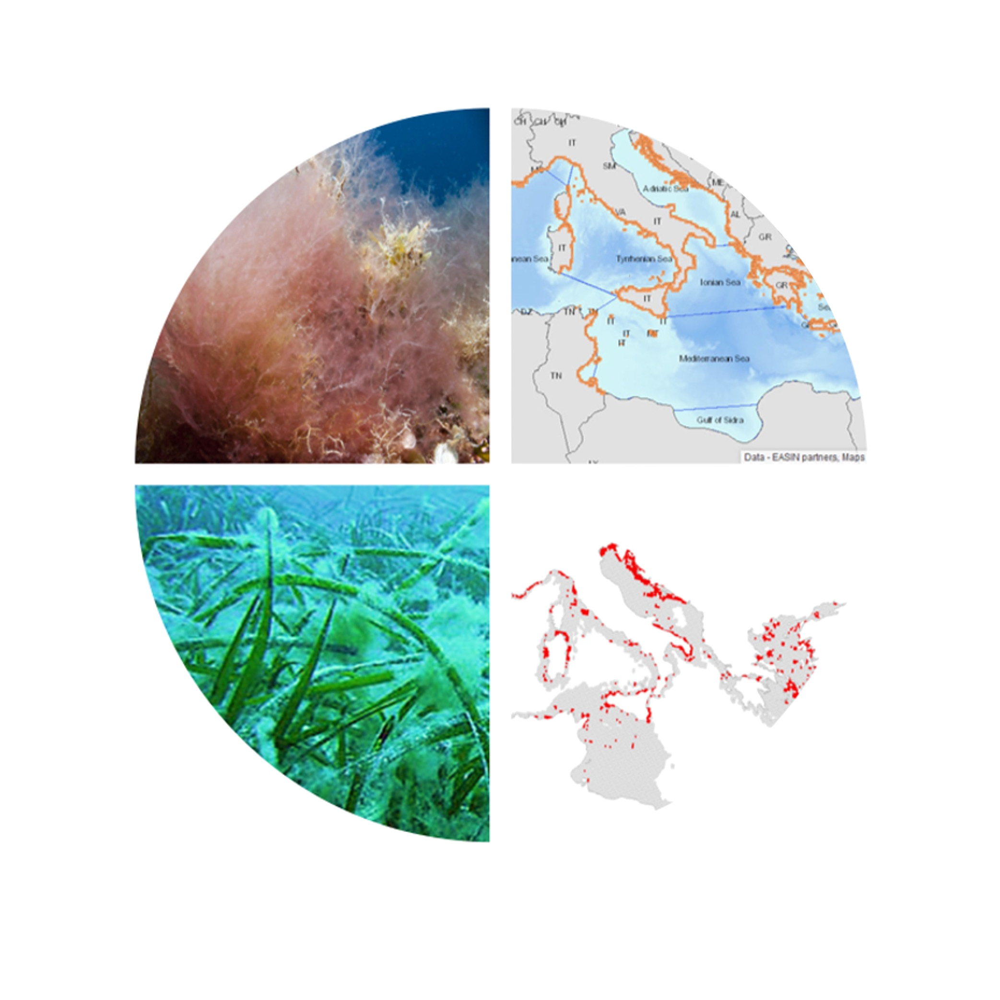
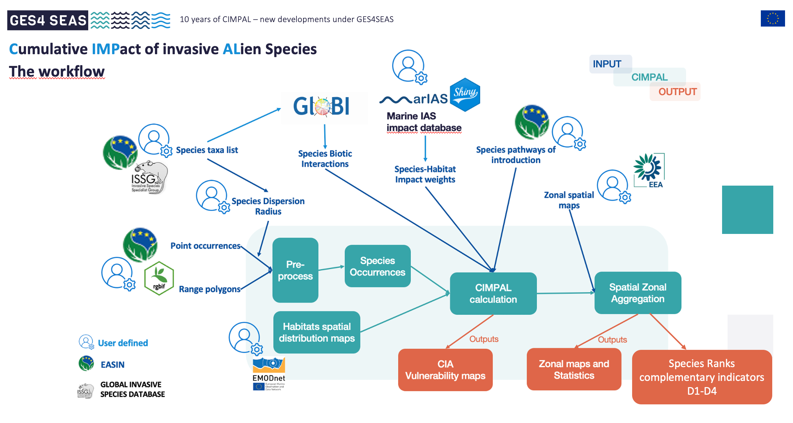

CIMPAL index
An index to assess the Cumulative IMPacts of invasive ALien species.

The introduction of alien species (AS) is an indicator of pressure that shows increasing trends over recent decades. It is a source of compositional changes, and, ultimately, will lead to global biological homogenization. The impacts of biological invasions are felt from environmental to socio-economical levels (Katsanevakis et al. 2014, Diagne et al. 2021) and, despite a growing knowledge on the pathways, mechanisms and impacts of invasive alien species (IAS), prevention, management and control, and mitigation strategies are still lagging.
For these reasons, several regional and international policies and regulations urge stakeholders to develop risk assessment of alien species introduction and establishment, habitat vulnerability to invasive alien species and estimation of the impact on natural communities (Katsanevakis et al. 2023). The CIMPAL index allows to deal with many of the challenges of large IAS assessments:
- Bioinvasions research and management need a spatio-temporal context;
- The large amount and different type of data require integration and computational capacity;
- Appropriate management scale challenges spatial assessment resolutions;
- The integration of species occurrences and habitats distribution with critical non-traditional data dimensions such as e.g., magnitude of impact, species traits, biological interactions, pathways of introduction, adds complexity to integrated assessments;
- Informed decisions demand clear uncertainty communication supported by confidence measures of the assessments.
CIMPAL is a cumulative impact assessment (CIA) approach (sensu Halpern et al. 2008) and since its original formulation (Katsanevakis et al. 2016), new extensions have been developed and currently a CIMPAL family of indices is available offering higher versatility:
- CIMPAL: Focuses on the negative impacts of invasive alien species in the enviroment;
- CIMPAL+: Addresses the positive impacts of invasive alien species in the enviroment;
- CIMPAL-JH: Extends the analysis to include the environmental impacts caused by jellyfish blooms and harmful algal blooms (HABs);
- CIMPAL-ES / CIMPAL-ES+: Assesses the cumulative impact (either positive or negative) of invasive alien species on ecosystem services (such as food provision).
CIMPAL CALCULATORS:
There are alternative tools available to compute the CIMPAL index. A tutorial on how to compile and structure all data files to run the CIMPAL index calculator is available here and also through LifeWatch Training Platform. This tutorial is useful to help preparing the data for the alternative ways of computing the CIMPAL index.
OPTION 1.
The most simple and user friendly way to calculate CIMPAL, with no coding skills needed, is supported by LifeWatch ERIC. It offers a cloud-based computing webservice that allows running heavy datasets at high saptial resolution. The CIMPAL workflow is accessible using the link LifeWatch ERIC. Once there, select the ‘Biotope’ workflow. Several login options to the My LifeWatch Platform are available, including LWOS (LifeWatch), Google, or EGI / EOSC credentials.
OPTION 2.
A CIMPAL R-based workflow offers more flexibility, all ows to include additional features (e.g., biotic interactions) and to calculate all the different versions of the CIMPAL family of indices, but it requires some basic coding skills. It is available from a GitHub repository: CIMPAL.
The CIMPAL workflow is illustrated below. Extended versions of the CIMPAL index will have adpatations to this workflow, particularly on the nature of the input data. There are supporting resources available for many of the workflow steps, however the possibility for user defined options is in most stages also allowed.

What can you explore from CIMPAL outputs?
Spatially
- Identify areas at risk and invasion hotspots with the highest potential cumulative negative impacts
- Confidence map of the assessment
- Rank habitats according to vulnerability
- Focus on priority conservation habitats
- Aggregated CIMPAL assessments per user-defined zone, e.g., Country, Marine Region, Protected Areas or user-defined grid (e.g. EEA)
- Cadastral references
- Maritime Spatial Planning
Species level
- Cumulative impact map per species
- Rank species according to highest threat (overall, per zone or per habitat)
Per pathway of introduction
- Evaluate the effectiveness of management measures
- Cumulative impact maps per pathway
- Species rank per pathway